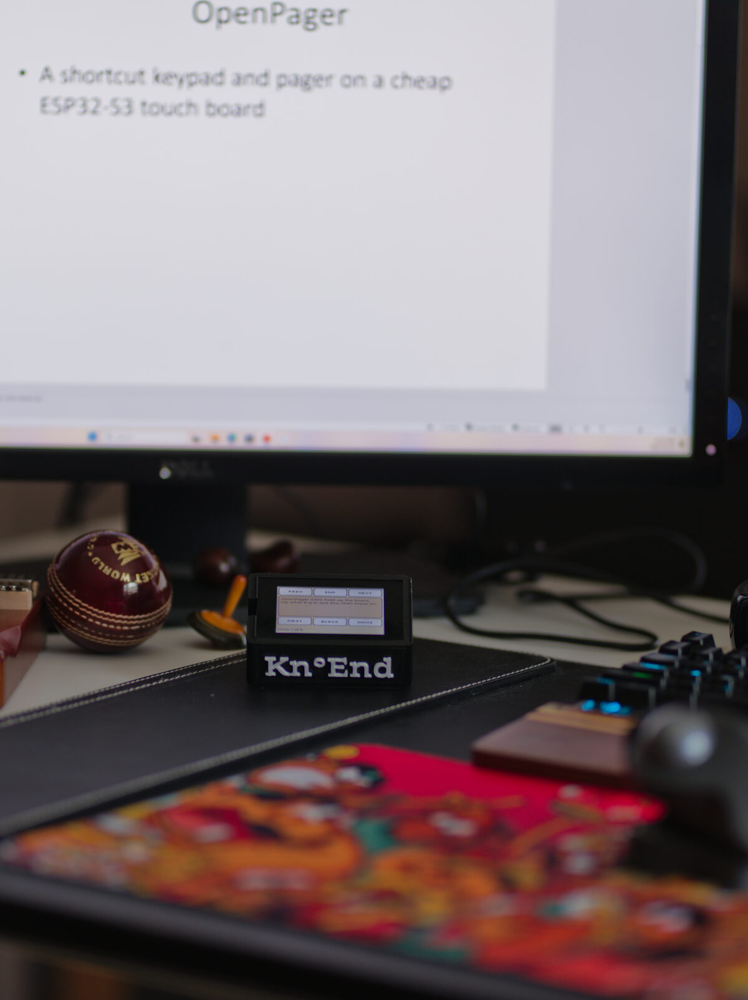

Follows you
App, site and terminal aware
Layouts follow the focused app (Linux X11, macOS, Windows), the website (Chrome, Edge, Firefox extension) and the program in a terminal tab.
Open-source · ESP32-S3 · Linux, macOS, Windows
Kn°End turns an inexpensive touchscreen board into a shortcut keypad whose keys change with the app, website or terminal program in front of you. Over Wi-Fi or Bluetooth it becomes a pager: answer a coding agent from another room, or read your speaker notes while you present.
Said “no end”: silent K, as in know. Or நோண்டு.

நோண்டு
nōṇḍu · Tamil · literally “dig”, “poke at”
Say Kn°End aloud and it is close to the Tamil நோண்டு. In everyday speech it means to tinker: to poke at a thing until you see how it works, then make it do something new.
That is the project: a cheap touch board, poked at until it does more, with no end to what it can be set up for.
Commercial keypads run through vendor software on Windows and macOS, and skip Linux.
A keypad is only useful where someone built a profile. Here an AI drafts the keys and you review them.
Layouts are data, checked by one validator, so a shared layout is safe to accept from a stranger.
A $20–40 ESP32-S3 touch board you may already own becomes the keypad.
# a site recipe: keys for Amazon [pack] name = "Amazon" source = "community" # builtin | community | ai | user [match] web = ["amazon.ca", "amazon.com", "amazon.*"] [[key]] label = "Orders" action = { kind = "open", url = "/gp/your-account/order-history" }
Follows you
Layouts follow the focused app (Linux X11, macOS, Windows), the website (Chrome, Edge, Firefox extension) and the program in a terminal tab.
AI
The service lists installed apps and an AI drafts keys, marked unreviewed until you check them. Gemini, OpenAI, Anthropic, OpenRouter, local Ollama, or a signed-in Claude Code / Codex CLI.
Pager
Claude Code permission requests and questions appear on the board: Allow, Always, Deny, Stop, from across the house.
Present
In a PowerPoint slide show the board shows the slide’s notes, paged to fit, with Prev, Next, First, End, Black and White.
Setup
Grounded in the project’s knowledge base, it runs checks, explains failures and offers one-click fixes. It speaks up on its own when the service notices a fault.
Music
Boards with a microphone hear a sung or played note and send it to MuseScore or any music app as MIDI.
One universal firmware image. A small JSON definition per board describes its display, touch, pins and buttons, so a new board is usually a definition, not new code.
| Board | Status | Display | Extras |
|---|---|---|---|
| ONX2432G028 | tested | 2.8" 320×240 ST7789 | microphone |
| Freenove FNK0104B | tested | 2.8" 320×240 ILI9341 | native USB |
| Waveshare ESP32-S3-Touch-AMOLED-2.06 | run on board | 2.06" 410×502 AMOLED | burn-in care, buttons |
| Espressif ESP32-S3-BOX-3 | unverified | 2.4" 320×240 ILI9342C | |
| Waveshare ESP32-S3-Touch-LCD-2 | unverified | 2" 240×320 ST7789T3 |
knoend for Linux or macOS../knoend serve (on Windows, KnoEnd from the Start menu). The web app opens at http://127.0.0.1:7342.The same documents the setup assistant reads. Every failure we have seen, with its cause and fix.
No. Paired over Bluetooth the board is a keyboard on any computer with nothing installed. The service adds keys that follow the app, the pager, AI drafting and setup.
Only when you ask it to draft keys, and then only the app ID, domain and page structure (for a terminal program, its name and one-line manual description). You can use a local model or a CLI you are already signed in to.
Plug it in anyway: the service identifies it from the firmware it carries and says plainly if it does not know it. Back the flash up before trying anything; most ESP32-S3 boards with a supported display and touch chip need only a JSON definition.
Not yet. On Linux the focus watcher uses X11; macOS and Windows are supported.
Kn°End was built during Build North: Ship Something Real by Sundararajan Mohan and Tom Grabowski, with help from AI coding agents (Claude Code, Codex, Antigravity). The enclosure was designed by Skanda. Every change is in the running log, with what was tested and on which hardware.
What existed before the week, and what was built during it, is listed in the README.